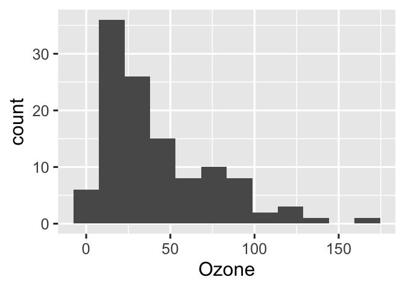

4 Chapter 3
This chapter shows how you might use Target Markdown to create a target pipeline for a specific chapter. It will create the {target} files in the chapter folder so you’ll want a separate folder for the chapter. To work on the chapter, you would set the working directory to the chapter folder. Then you can use the usual {targets} workflow and visualizations.
The chapter at https://books.ropensci.org/targets/markdown.html walks through it in detail. This R Markdown template is based off what you get using File > New > RMarkdown > Template > Targets Markdown
4.1 How to run this.
Just hit the Knit button.
What’s it going to do? Basically it will create the target objects in
_targets and then the markdown text will use those target objects.
That way you don’t end up re-running lengthy things. How is this
different from caching? Well you explicitly specify the dependencies of
your objects. {targets} is smart and will figure out if it needs to
re-make an object based on whether it or its dependencies changed. Also
caching crashes {bookdown} constantly.
4.2 Packages
The example requires several R packages, and targets must be version
0.5.0.9000 or above.
install.packages(c("biglm", "dplyr", "ggplot2", "readr", "targets", "tidyr"))4.3 Setup
If you are using old versions of targets (<= 0.7.0) and/or knitr
(<= 1.33), you will need to load the targets package in the R
Markdown document in order for Target Markdown code chunks to work.
library(targets)Near the top of the document, you may also wish to remove the
_targets_r directory previously written by non-interactive runs of the
report. Otherwise, your pipeline may contain superfluous targets.
library(targets)
tar_unscript()4.4 Globals
We first define some global options/functions common to all targets. The function below plots a histogram of ozone concentrations, and our histogram target will need it.
options(tidyverse.quiet = TRUE)
tar_option_set(packages = c("biglm", "dplyr", "ggplot2", "readr", "tidyr"))
create_plot <- function(data) {
ggplot(data) +
geom_histogram(aes(x = Ozone), bins = 12) +
theme_gray(24)
}
#> Establish _targets.R and _targets_r/globals/example-globals.R.4.5 Targets
This is the important part. Notice that it uses {targets ...} not
{r ...}. You need to define dependencies (like data) as a target
object so that {targets} can keep track of whether it needs to update
objects based on changes to its dependencies.
How will you use these? Not here. This is just defining them. Scroll down to see how to use them. Note you don’t have to define all your targets in one place. Scroll down to see examples.
Our first target borrows the airquality dataset built into base R.
tar_target(raw_data, airquality)
#> Establish _targets.R and _targets_r/targets/raw-data.R.Our next targets preprocess the data, make a histogram, and fit a model.
list(
tar_target(data, raw_data %>% filter(!is.na(Ozone))),
tar_target(hist, create_plot(data))
)
#> Establish _targets.R and _targets_r/targets/downstream-targets.R.Set the tar_simple chunk option to TRUE to define a single target
with the command in the code chunk. The chunk below only contains
biglm(Ozone ~ Wind + Temp, data) in the source, but because
tar_simple is TRUE, it is shorthand for
tar_target(name = fit, command = biglm(Ozone ~ Wind + Temp, data)).
All other arguments to tar_target() are set to their default values
(configurable with tar_option_set()).
tar_target(fit, {
biglm(Ozone ~ -1 + Wind + Temp, data)
})
#> Define target fit from chunk code.
#> Establish _targets.R and _targets_r/targets/fit.R.You need to be careful how you name things. You don’t want to name an
object to the name of a targets object. So like in the code above, you
don’t want to use data as a name in that code chunk since data is
now a targets object.
4.6 Pipeline
If you ran all the {targets} chunks in non-interactive mode, then your
R scripts are set up to run the pipeline. I don’t know what this
means.
tar_make()
#> [31m✓ skip target raw_data
#> [39m[31m✓ skip target data
#> [39m[31m✓ skip target fit
#> [39m[31m✓ skip target hist
#> [39m[31m✓ skip pipeline
#> [39m[31mWarning message:
#> package ‘targets’ was built under R version 4.1.2
#> [39m4.7 Output
You can retrieve results from the _targets/ data store using
tar_read() or tar_load().
library(biglm)
tar_read(fit)
#> Large data regression model: biglm(Ozone ~ -1 + Wind + Temp, data)
#> Sample size = 116tar_read(hist)